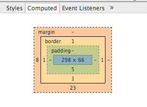

The Infamous Box Model
So when thinking about borders, margin, and padding, first we need to think about the structure of elements on the page. The box model allows various page elements to have borders and to be spaced and sized by using CSS.
Padding is space inside the element that goes around the content. If you have a background color set for the element, the padding area will reflect the background color. The element border goes around the element content AND padding. Border CSS allows you to give an element style, thickness and color. The margin of an element is the space surrounding it and is outside of the content, padding, and border. If there is a background color on the element, the margin will not reflect this color.
A very helpful tool when trying to visualize the box model can be found in Chrome developer tools. To get to it, go to your developer tools (right click, inspect element) and then on the right side of the tools pane, click on the "Computed" tab. There you will see the box model for whatever element you are inspecting. I find this tool extremely helpful when trying to visualize where exactly the margins and padding are, whether an element has a border, and what the actual size of the element is inside the padding.
